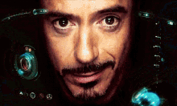
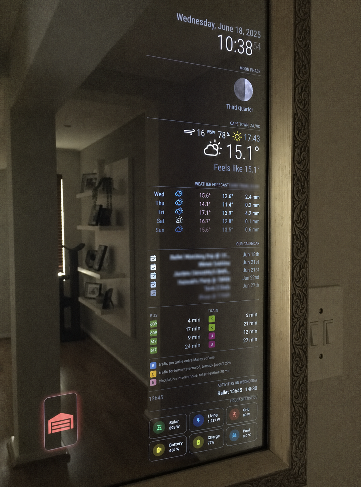
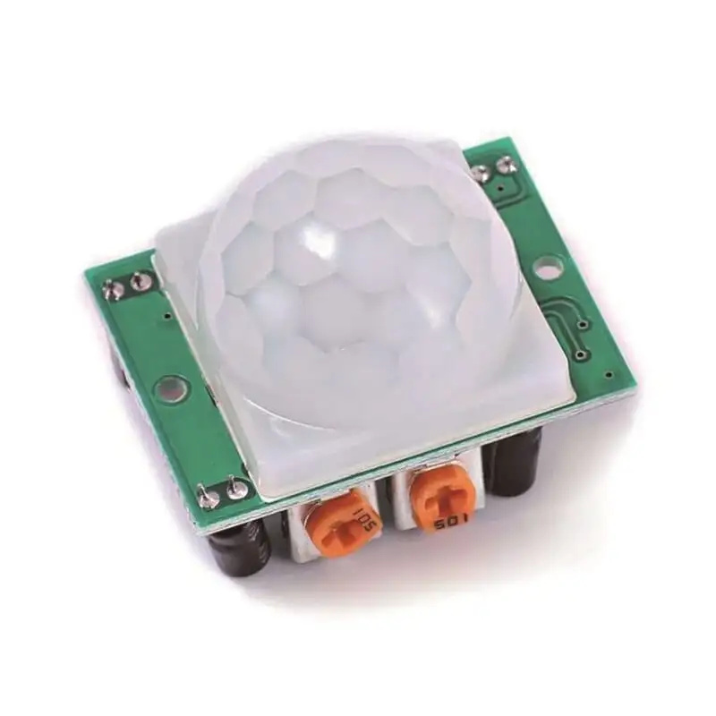
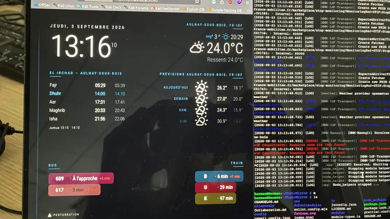
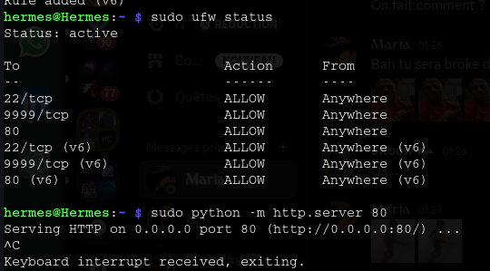
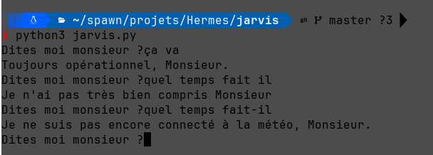
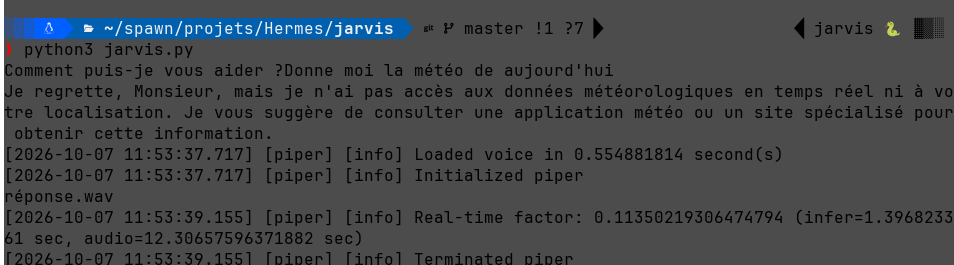

Un assistant vocal IA personnel construit from scratch en Python, inspiré de Jarvis. Du câblage électrique au streaming vocal en temps réel, en passant par un VPN maison et un homelab — un projet qui mêle hardware, réseau et intelligence artificielle.
La vision


Hermes n'est pas qu'un chatbot vocal. C'est un écosystème complet : un miroir connecté mural avec dashboard de transports en temps réel, un Raspberry Pi serveur VPN, un homelab avec Proxmox et NAS, et un assistant vocal capable de chercher sur le web, donner l'heure et bientôt contrôler la domotique Zigbee.
Chronologie du projet
Recherche de la dalle idéale. OLED visé (noir parfait), VA retenu en compromis. Samsung 27" VA incurvé trouvé à 50€ sur Leboncoin — léger défaut de châssis, zéro pixel mort. Miroir sans tain en vraie vitre 6mm prévu (pas de film, résultat médiocre selon la communauté MagicMirror).
3 câbles sortent du mur : phase, neutre, terre. Raccordement direct via wagos dans une boîte de dérivation — pas de prise murale. Alimentation du Pi par module rail DIN Mean Well (230V → 5V). Disjoncteur identifié, wagos posés, courant testé.
Flash avec Raspberry Pi Imager, galère cloud-init (ne s'exécute qu'au premier boot, pas de seconde chance). Utilisateur créé manuellement, SSH configuré. MagicMirror² installé avec modules RATP/Transilien, custom.css écrit pour la lisibilité à 2-3m (police x2, blanc pur, espacement accru).

Tunnel VPN sur le Pi pour accès à distance depuis l'iPhone. Réseau tunnel dédié (192.168.110.0/24), port 9999/UDP. Résolu : UFW bloquait en TCP, IP forwarding + iptables MASQUERADE pour accéder au reste du réseau local. Testé en 4G — accès complet.

Architecture cible : mini PC (Proxmox) pour Zigbee2MQTT + Pi-hole, NAS Synology DS224+ en RAID1 pour le stockage. Budget global estimé ~750-1050€. Chaque machine surveillée via healthchecks.io + Pushover. Le tout dans un caisson compact prévu pour le déménagement.
Le cœur du projet. Pipeline vocal complet codé from scratch en Python : wake word, VAD, transcription, LLM, TTS streaming, le tout orchestré par threads et queues. Environ 400 lignes de code, écrites exercice par exercice, en apprenant Python en même temps.
Pipeline vocal — Phase 6
Le streaming fonctionne phrase par phrase : Claude génère le texte en streaming, chaque phrase complète est envoyée à Cartesia via WebSocket persistant, et l'audio sort en parallèle via un pipe vers ffplay. Un thread lit la queue, un autre la remplit — la première phrase arrive pendant que Claude génère encore la suite.
Évolution


Le code a évolué du dictionnaire de réponses statiques (exercice 1) jusqu'au pipeline complet avec streaming. Chaque exercice a été codé par moi-même, avec Claude en mode guide — jamais de copier-coller, toujours la compréhension d'abord.
Fonctionnalités
Journal de bord — Extraits
Chaque session de développement est documentée. Voici les moments clés — les erreurs qui ont le plus appris.
.lower sans parenthèses, reponse.content(0) au lieu de [0], if historique > 20 au lieu de len(historique) > 20. Première connexion à l'API Claude. Découverte que l'API n'a pas de mémoire : il faut renvoyer tout l'historique à chaque appel.
while "." or "!" or "?" vaut toujours True (précédence des opérateurs). Découverte des listes en compréhension, des threads (threading.Thread), et de queue.Queue pour faire communiquer deux threads. Le tampon (buffer) : couper le début, garder la fin.
Le fix tenait à deux flags ffplay : -probesize 32 -analyzeduration 0. Sans ça, ffplay attendait d'analyser les données avant de jouer — crash immédiat. Benchmarks : whisper ~1.4s, Claude ~1.3s, TTS ~0.8-1.7s. Le TTS était le vrai goulot, pas whisper.
OpenWakeWord détecte "Hey Jarvis" à 0.99. Le micro du laptop était le vrai problème de transcription — SonoBus via le réseau local + null sink PulseAudio pour utiliser le micro Windows sans retour audio. La transcription whisper est devenue bien meilleure.
Piège while/else Python (le else ne s'exécute pas sur break), tapis.get() fantôme qui jetait un audio, mode_écoute = False qui coupait l'écoute à chaque tour. Puis tentative d'animation dans un thread — abandonné : cv2.imshow() (Qt) doit rester dans le thread principal.
Architecture homelab
| Machine | Rôle | Statut |
|---|---|---|
| Raspberry Pi 4 | MagicMirror² + WireGuard VPN | Opérationnel |
| Mini PC (Proxmox) | Hermes IA + Zigbee2MQTT + Pi-hole | À acheter |
| NAS Synology DS224+ | Stockage RAID1 + QuickConnect | À acheter |
| Speakerphone USB | Micro 4-array + echo cancel hardware | ReSpeaker XVF3800 |
L'ensemble sera regroupé dans un caisson compact transportable, prévu pour le déménagement vers un T1 à Levallois. Le Pi reste dédié au miroir et au VPN, le mini PC prend en charge l'IA vocale et la domotique. Accès distant via WireGuard depuis l'iPhone en 4G, accès NAS pour la famille via QuickConnect Synology.
Stack technique
Auteur
Étudiant en cybersécurité. Hermes est mon premier projet Python d'envergure, construit pour apprendre en faisant.
Méthode